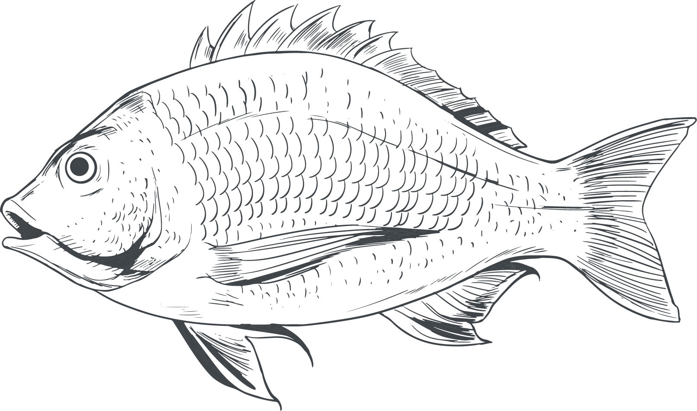

2019 / 03 /18
湯瑪士肉舖
。 質感生活新選擇 。
首頁
關於我們
限時優惠
線上訂購
店舖資訊
品牌故事
From farm to table.
湯瑪仕肉舖源自1952年
還年幼的創辦人Mr. Thomas騎著腳踏車
運送最新鮮的食材給店家們
而後，為了讓更多老饕們即時享受到最厚實鮮美的原始滋味
在羅斯福路不起眼的巷弄裡成立了第一代肉舖
從進口、生產、包裝、品管到自主檢驗
Mr. Thomas從不放過任何一個細節中的魔鬼
堅持只生產自己敢大口吃的產品
「You are what you eat.」獻給對食材品質堅持的您
獲獎紀錄
HACCP認證（從2011年至今)
ISO22000認證（從2011年至今)
107年新北市三星級綠色循環商店
美國特級
無骨牛小排
US Choice Boneless Short Rib
美國Choice等級無骨牛小排，適合各種牛排熟度，鮮嫩多汁的肉質，搭配豐富大理石花紋，輕鬆料理就可品嚐絕不失敗的美味牛排。
日本冠軍宮崎熟成和牛紐約克
JP 5 Miyazaki Wagyu Striploin Steak
日本宮崎直送、限量供應的和牛紐約客，取自於牛的前腰脊部，運動量少、豐富的油花與口感Q彈的細筋，非常適合用於煎烤。0.6公分切割加上小份量包裝，適合想嚐鮮的您！
連續三屆拿下「日本全國和牛能力共進會大賽」冠軍頭銜的「宮崎牛」，是嚴選日本和牛油花評分等級中最高的和牛，宛如藝術品般細緻、誘人的油花紋路，烹飪後鮮嫩多汁。
西班牙小鮮肉梅花豬排
ES Pork Collar Butt Steak
精選六個月齡的西班牙進口小豬，無施打萊克多巴胺或賀爾蒙。肉質鮮嫩有彈性，加上梅花般的油花紋路，叉燒、燒烤、煎、炸等料理方式都十分美味～
紐西蘭
小羔羊法式羊排
NZ French Lamb Rack
精選紐西蘭小羔羊法式羊排，烘烤或香煎時散發出的帶骨香味總能讓人唾涎欲滴，肉質更是鮮嫩多汁；貼心為您依循肋脊排列走向精準切割，適合全家大小一同分享食用，在家即可享用到高級餐廳的美味料理。
皇后級
Shrimps
根島生態草蝦
來自印尼婆羅洲根島紅樹林生態區，當地蝦農採用古法智慧「粗放養殖」的方式，這片紅樹林下的每隻蝦，不須投放飼料或依靠任何藥劑，完全由蝦自然採食，在純淨的海水中野生成長...
格陵蘭扁鱈(大比目魚)
Greenland Halibut
嫩滑香甜的格陵蘭扁鱈，脂肪含量低，適合香煎、清蒸等料理方式，簡單烹調便能品嚐到最新鮮的好滋味。

長江特級大湖大閘蟹
Hairy crab
長江特級大閘蟹甜度很足，不需任何調味，清蒸最能呈現原味。」整隻毛蟹上桌，挑起殼內飽滿蟹肉入口...